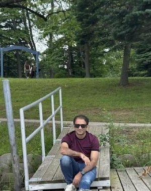
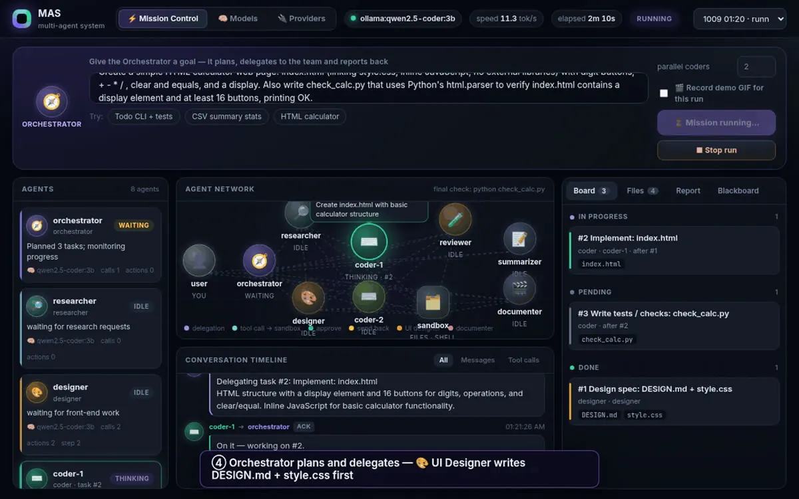
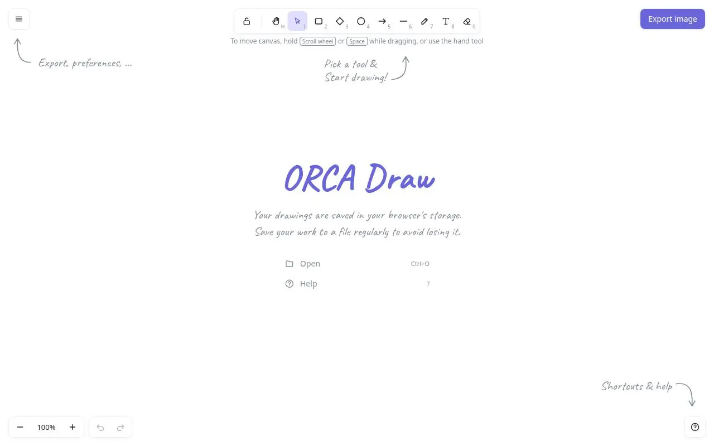
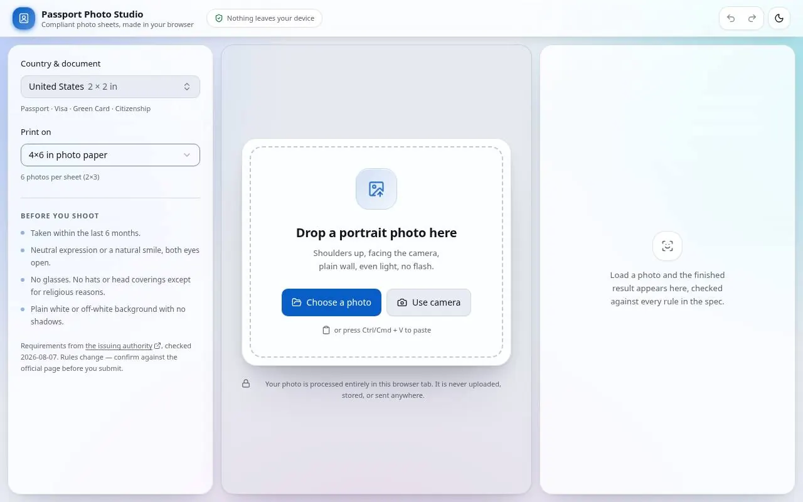
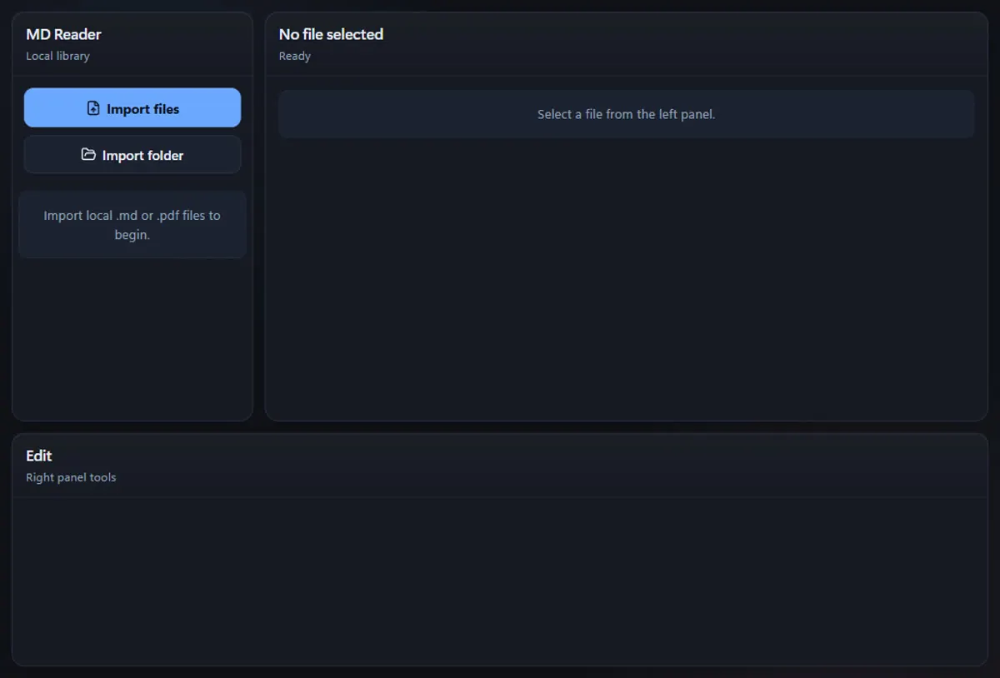
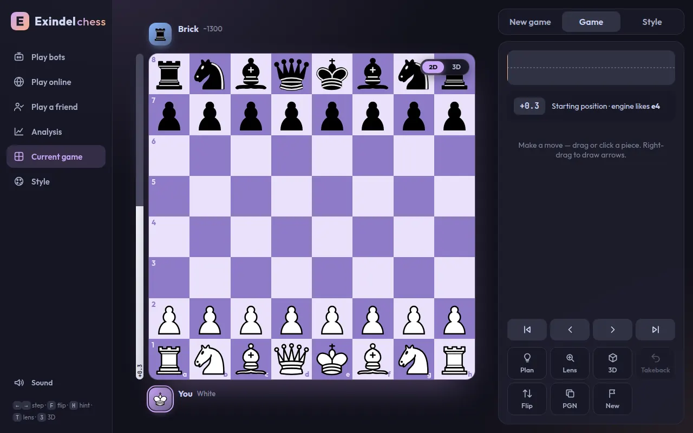
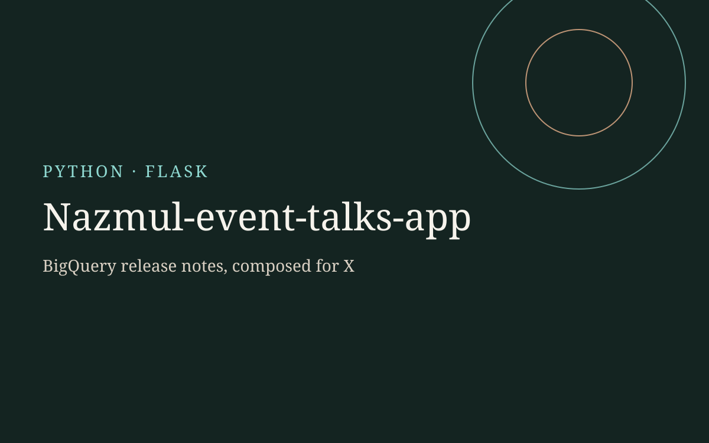

Aug 2024 – Present
Graduate Assistant / PhD Candidate
Kent State University · Kent, Ohio
- Research quantum sensors and medical robotics.
- Teach the Mechatronics, Signal and Electronics, and Circuits labs.
Current section:
Loading profile…
PhD Candidate · Kent State University · Quantum sensors · Kent, Ohio
PhD researcher in quantum sensors and medical robotics at Kent State, with 12 years keeping hospital scanners and surgical robots running across South Asia. I love teaching and building things.

I’m a PhD candidate in Mechatronics, Robotics and Automation Engineering at Kent State University, working with Dr. Tao Shen. My research is on quantum sensors and medical robotics, including assistive and wearable devices for rehabilitation. I also teach the Mechatronics, Signal and Electronics, and Circuits labs. I publish my work on quantum sensors and medical robotics.
Before the PhD, I worked in the field. I started with MRI and X-ray systems at Siemens Bangladesh and taught part-time at Daffodil International University. I then spent eight years at Philips installing and servicing CT and PET-CT scanners, and three years at Medtronic supporting the Hugo robotic surgery system in hospitals across Bangladesh and India. Along the way I helped expand the service business into Nepal and Sri Lanka.
During my MSc at BRAC University I published on explainable AI for medical imaging: deep learning models that show their reasoning when they detect kidney and lung disease in CT scans. That mix of hands-on hospital work and research shapes everything I build now.
6 papers, after 12 years on hospital systems.
Aug 2024 – Present
Kent State University · Kent, Ohio
2021 – Aug 2024
Medtronic
2013 – 2021
Philips Healthcare
2012 – 2013
Siemens Bangladesh Ltd.
2012 – 2013
Daffodil International University
Aug 2024 – Present
Kent State University · Kent, Ohio, USA
Apr 2019 – Feb 2022
BRAC University · Dhaka, Bangladesh
Apr 2007 – May 2011
Chittagong University of Engineering and Technology (CUET) · Chittagong, Bangladesh

Multi-agent system (orchestrator, researcher, designer, coders, reviewer, summarizer, documenter) running on free local models with a live dashboard.



Local-first Markdown and PDF reader for Windows (web and Tauri desktop). Import files into a private library, read and annotate PDFs, edit Markdown, and export a file when you need one.


Flask app that fetches Google Cloud BigQuery release notes, splits combined updates into cards, and helps compose posts for X (Twitter) with character-limit checks.
Working on quantum sensors, medical robotics, wearable devices or healthcare AI? I’m happy to talk research, industry projects, or mentoring. Email is the fastest way to reach me.
Answers stay in your browser unless you turn on the optional assistant.